LegalIA, un atlas de las leyes, reglamentos, lineamientos y tratados
División de Economía Aplicada
Centro de Investigación y Docencia Económicas (CIDE)
Inteligencia Artificial (IA)
Conjunto de teorías, métodos y algoritmos para el desarrollo y estudio de sistemas que presentan un comportamiento que sería identificado como inteligente.
Aprendizaje Computacional
Subárea de IA que estudia el desarrollo e implementación de algoritmos capaces de aprender de datos de manera autónoma sin haber sido explícitamente programados.
Procesamiento de Lenguaje Natural
Conjunto de teorías, métodos y algoritmos para el desarrollo y estudio de sistemas que permitan el entendimiento, generación y manipulación del lenguaje humano.
Derecho y datos
La legislación es, ante todo, texto. Son leyes, reglamentos y tratados escritos en lenguaje natural, que se modifican con el tiempo y que se pueden estudiar como datos.
Así la vemos
Así está
Aplicaciones
Aplicaciones jurídicas
1987
Primera Conferencia Internacional de Inteligencia Artificial y Derecho (ICAIL) (Proceedings of the First International Conference on Artificial Intelligence and Law 1987). Con ella el campo se institucionaliza.
GPT-4 y el examen de la barra
GPT-4 “aprobó” el examen de la barra de Estados Unidos (Katz et al. 2024).
Una reevaluación
Al repetir la evaluación, las cifras resultaron más conservadoras (Martínez 2024).
Modelos generativos públicos
Alucinan entre 58 % y 88 % de las veces al preguntar sobre jurisprudencia federal estadounidense (Dahl et al. 2024).
Herramientas comerciales “libres de alucinación”
Aun así se equivocan entre 17 % y 33 % de las veces (Magesh et al. 2025).
Alucinar
Es generar una respuesta que suena convincente, pero que cita leyes o casos que no existen o que dicen otra cosa.
Evidencia concentrada en otros países
La validación de los sistemas de IA jurídica se ha concentrado en Estados Unidos y la Unión Europea, así que para América Latina la evidencia es escasa.
Para México
No se cuenta con puntos de referencia públicos ni con corpus abiertos construidos a partir de las leyes mexicanas vigentes.
Leyes dispersas
La legislación vigente está dispersa en fuentes heterogéneas y es de difícil consulta para quien no es especialista.
Cajas negras
Los modelos de lenguaje operan como cajas negras y no sabemos por qué responden lo que responden.
Confianza
La confianza depende de que la persona usuaria entienda por qué el sistema recomienda algo (Atkinson et al. 2020).
La respuesta debe remitir al artículo
Una respuesta jurídica útil es una que se puede verificar contra el texto vigente de la ley.
Datos abiertos
Corpus que documentan el sistema jurídico mexicano, estandarizados y abiertos.
Modelos especializados
Modelos de lenguaje entrenados con texto jurídico mexicano, liberados abiertamente.
PLN jurídico
Clasificación, resumen y minería de argumentos en los términos del derecho mexicano.
Todo en abierto (Apache 2.0)
El código está en https://github.com/INGEOTEC/LegalIA y el sitio en https://ingeotec.github.io/LegalIA/.
Diario Oficial de la Federación (DOF)
Es el medio oficial donde se publican los decretos, las leyes y sus reformas. Cada reforma aparece como un decreto.
Suprema Corte de Justicia de la Nación (SCJN)
Publica los textos consolidados y editoriales de las leyes, los reglamentos, los lineamientos y los tratados.
LegalIA parte de la SCJN
Sus textos ya traen cada instrumento completo y con su nombre, así que no hace falta reconstruirlos a partir de los decretos del DOF.
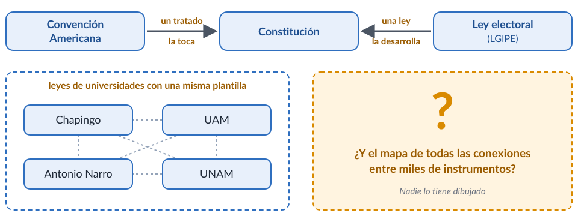
El problema
Las leyes, los reglamentos, los lineamientos y los tratados están conectados de muchas maneras, pero nadie tiene un mapa de esas conexiones entre miles de instrumentos.
La meta
Dibujar ese mapa, un atlas de las leyes, a partir del texto mismo y sin depender de que un instrumento cite a otro.
Las cuatro colecciones de la SCJN se publican como datos abiertos.
| Colección | Instrumentos en el mapa |
|---|---|
| Leyes | 314 |
| Reglamentos | 864 |
| Lineamientos | 125 |
| Tratados | 1,367 |
| Total | 2,670 |
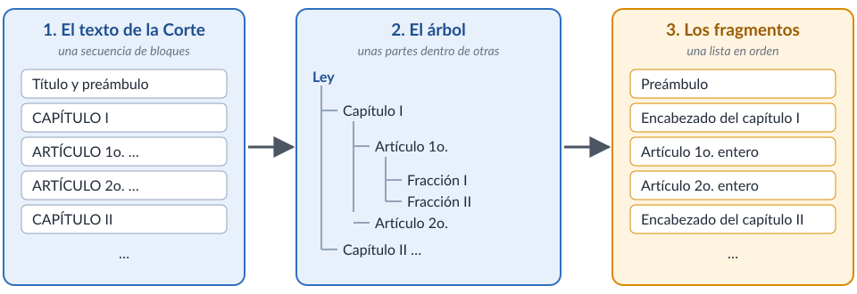
**LEY QUE CREA LA UNIVERSIDAD AUTONOMA CHAPINGO**
**ULTIMA REFORMA PUBLICADA EN EL DIARIO OFICIAL DE LA FEDERACION: 30 DE DICIEMBRE DE 1977.**
Ley publicada en el Diario Oficial de la Federación, el lunes 30 de diciembre de 1974.
LUIS ECHEVERRIA ALVAREZ, Presidente Constitucional de los Estados Unidos Mexicanos, a sus habitantes, sabed:
Que el H. Congreso de la Unión se ha servido dirigirme el siguiente
**D E C R E T O**
"El Congreso de los Estados Unidos Mexicanos, decreta:
**LEY QUE CREA LA UNIVERSIDAD AUTONOMA CHAPINGO**
**CAPITULO I**
De su Naturaleza, Objetivos y Medios
**ARTICULO 1o.-** Se crea la Universidad Autónoma Chapingo como organismo descentralizado del Estado, con personalidad jurídica, patrimonio propio y sede de gobierno en Chapingo, Estado de México.Texto plano
Es una sola tira de texto. Nada en ella dice dónde empieza un capítulo o dónde termina un artículo, más allá de sus líneas.
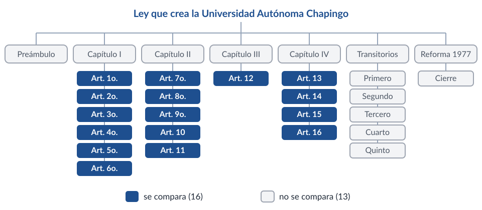
La ley tiene 29 fragmentos y 16 de ellos se comparan.
Cuáles se dejan fuera y por qué se explica más adelante, en «Qué se compara y qué no».
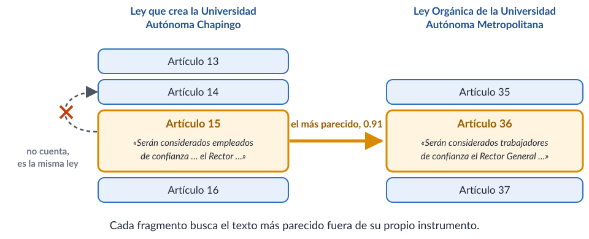
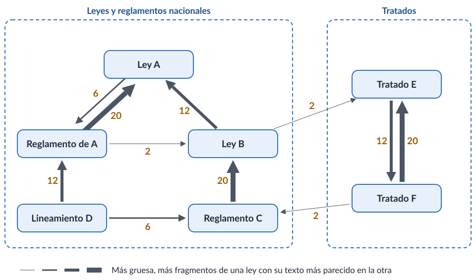
Con todas las leyes a la vez, las que comparten muchos textos parecidos quedan unidas por flechas gruesas. Cada flecha suma los artículos de una ley que encuentran su texto más parecido en la otra.
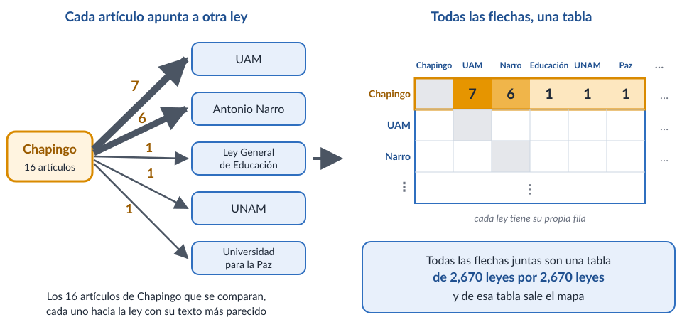
Es una heurística, una regla sencilla que acerca a las leyes que comparten textos parecidos. No mide si dos leyes están emparentadas jurídicamente.
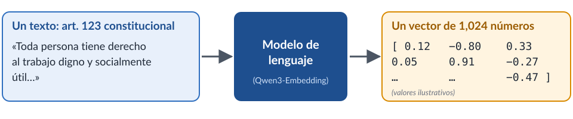
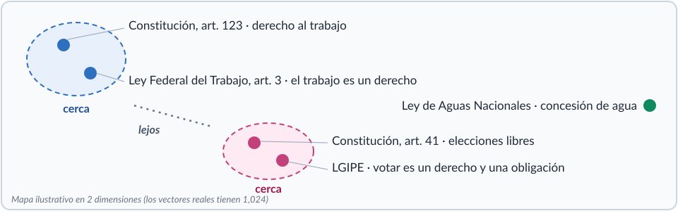
Qwen3-Embedding (Zhang et al. 2025) da 2,560 números en el 4B y 1,024 en el 0.6B.
Los fragmentos al 28 de octubre de 2026
Los compartidos
La envoltura y la matriz
La envoltura es el bloque de título que la Corte imprime y, en un tratado, el decreto de promulgación y su certificación. Con los fragmentos contados se llena una matriz dirigida de 2,670 × 2,670 instrumentos, con 47,157 celdas no nulas, y ningún texto lo comparten más de 14 instrumentos.
UMAP
“Aplana” el espacio de 2,560 dimensiones a una hoja, de modo que los instrumentos cercanos queden juntos (McInnes et al. 2018).
La vecindad (4, 8, 16 o 32) cambia el dibujo y no los datos.
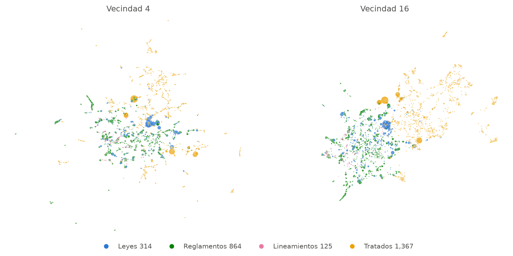
Doce mapas, uno solo
Tres similitudes por cuatro vecindades dan doce mapas. Cada uno se gira, se refleja y se escala sobre el del 4B a vecindad 16 (Grave et al. 2019).
Con la alineación el desplazamiento medio baja de 0.19–0.54 a 0.10–0.28.
Al cambiar de vecindad, cada instrumento que se mueve 4 px o más deja una estela de su color que se desvanece en 2.5 s.
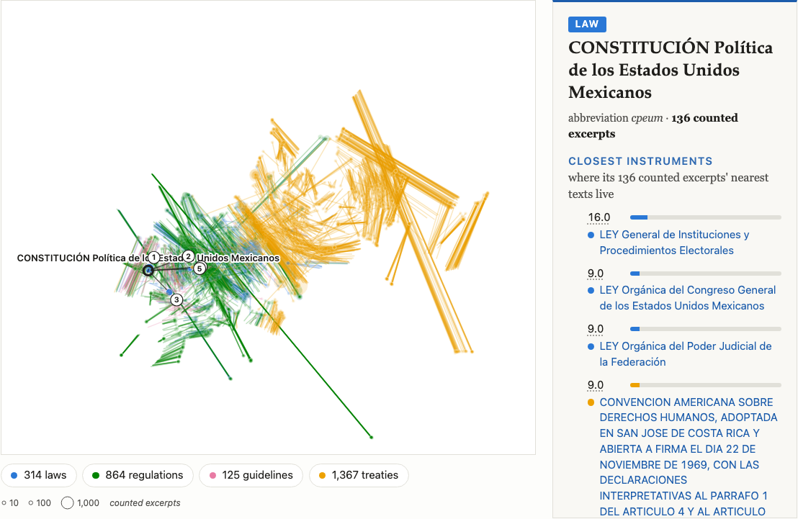
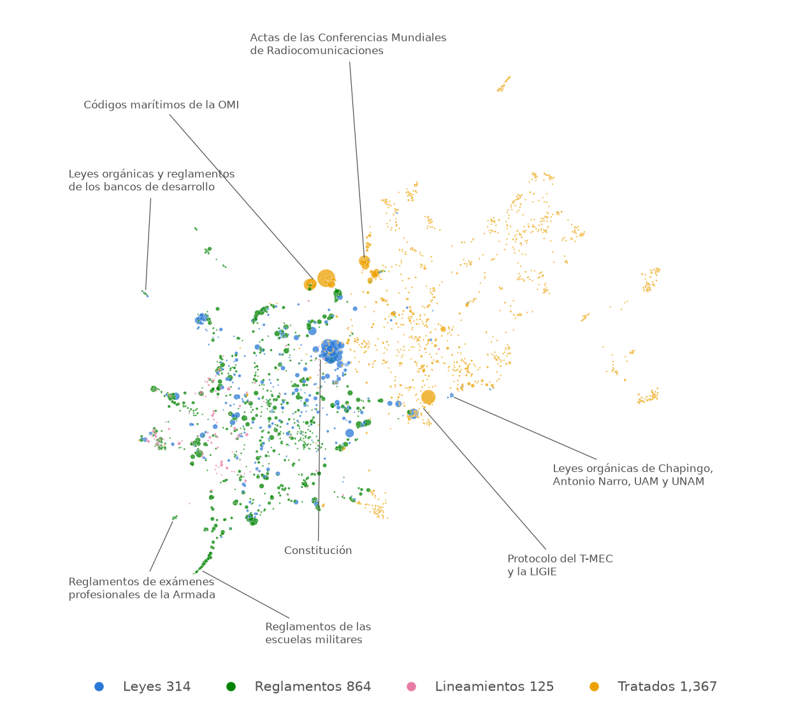
Cómo leer el mapa
Dos cuerpos
Para 1,298 de los 1,367 tratados el instrumento más cercano es otro tratado. Sólo 10 leyes, 6 reglamentos y 2 lineamientos tienen un tratado como el más cercano.
Islas de familias
Hay islas de reglamentos de exámenes de la Armada, de reglamentos de las escuelas militares y de bancos de desarrollo. También las leyes orgánicas de Chapingo, Antonio Narro, la UAM y la UNAM quedan juntas.
Donde los cuerpos se tocan
La Ley General de Salud queda entre sus reglamentos, y la LIGIE junto al protocolo del T-MEC.
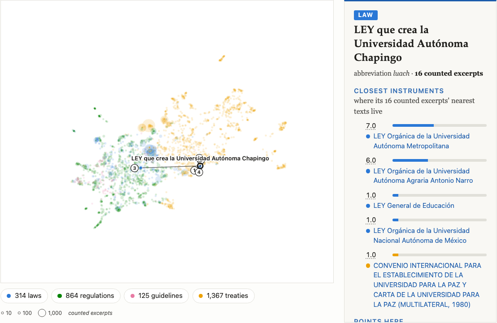
Ley de la UACh
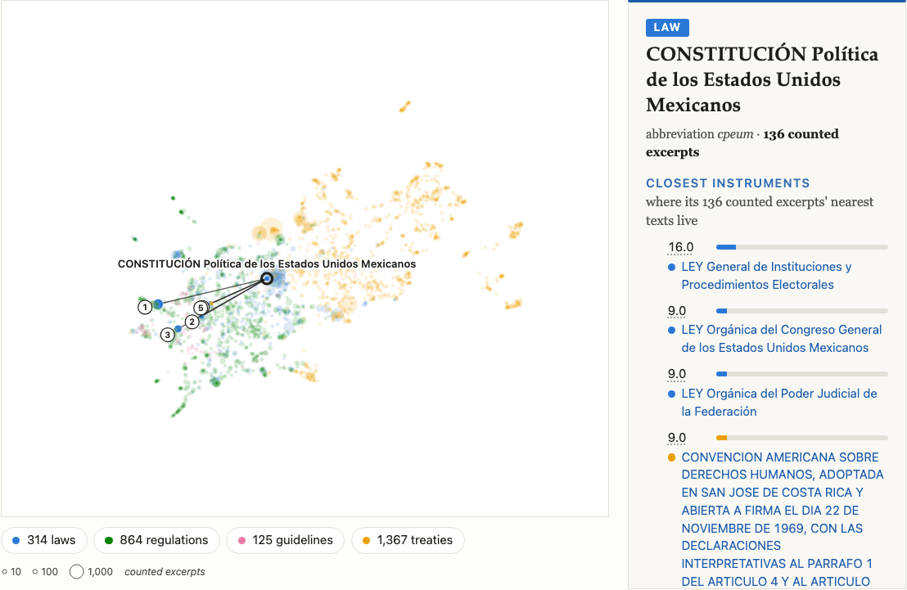
CPEUM
Tiene 1,347 fragmentos y 136 contados. Sus vecinos más cercanos son
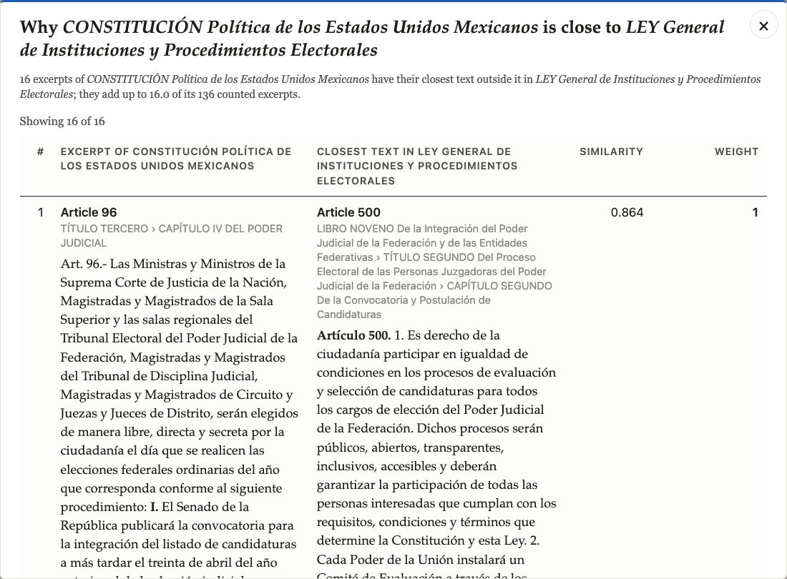
Pares de fragmentos
Cada peso abre la tabla de pares de fragmentos que lo explican. Con la LGIPE hay 16 artículos enteros.
El artículo 96 de la Constitución se parece al 500 de la LGIPE con una similitud de 0.86, y el 58 al 10 con 0.54.
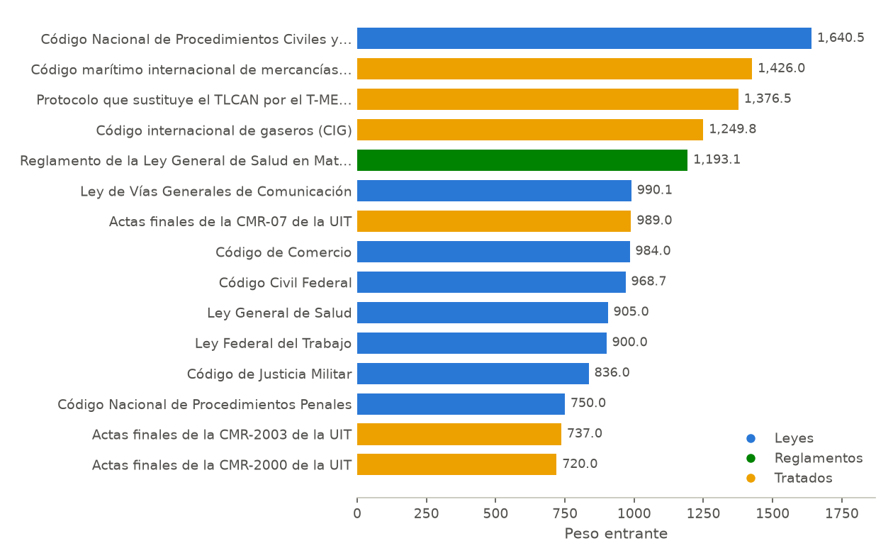
Mayor peso entrante
Encabeza el Código Nacional de Procedimientos Civiles y Familiares con 1,640.5, sobre todo por el Código Civil Federal. Siguen el Código IMDG, el Protocolo del T-MEC, el Código de Gaseros y el Reglamento de la Ley General de Salud en materia de control sanitario.
0.6B, 4B y BM25
La misma pregunta se contesta con Qwen3-Embedding en sus tamaños de 0.6B y 4B y con BM25 (Robertson y Zaragoza 2009) como línea base de palabras. Cada método cambia qué instrumentos están más cerca y por tanto cambia el dibujo.
El mapa abre con el 4B.
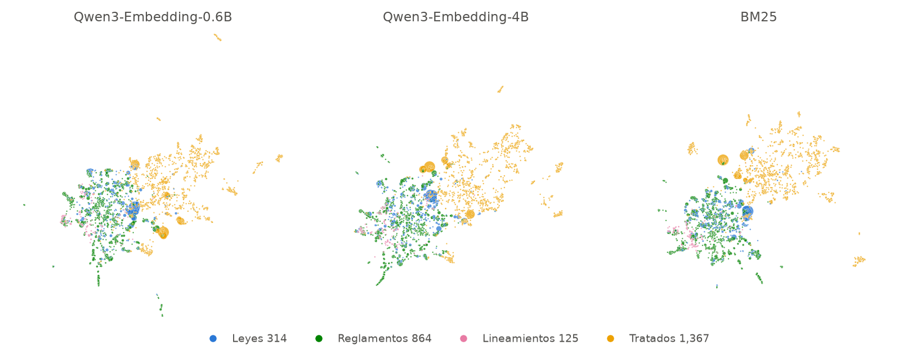
Qué son
Son vínculos que el texto declara. La señal A es el nombre del instrumento y la señal B es la frase “tiene por objeto”. Dan 277 vínculos de 253 instrumentos, y 62 nombres no se resuelven y se dejan fuera.
Qué se encuentra
El más cercano es un vínculo fuerte para 125, 129 y 131 de los 253 (0.6B, 4B y BM25). Uno de ellos está entre los cinco más cercanos para 194, 202 y 196. De los 209 reglamentos, el más cercano es su ley para 121, 122 y 124.
Empates y BM25
De las 18 comparaciones, 16 son empates y BM25 nunca pierde. Para esta tarea una medida de palabras es tan buena como los modelos.
Las citas
Hay 3,480 fragmentos que citan exactamente un instrumento, y 1,067 de ellos citan la Constitución. Se mide si el instrumento citado está entre los cinco más cercanos.
Los resultados
Lo está para 0.309, 0.342 y 0.317 de los fragmentos (0.6B, 4B y BM25), y el rango mediano es 18, 14 y 15. El 4B es mejor que el 0.6B en las cinco medidas y que BM25 en tres.
Por qué el nivel es bajo
Citar un instrumento no es repetir su texto, así que el nivel absoluto es bajo aun cuando la relación existe. Por eso el mapa abre con el 4B y se lee como una descripción y no como una medida.
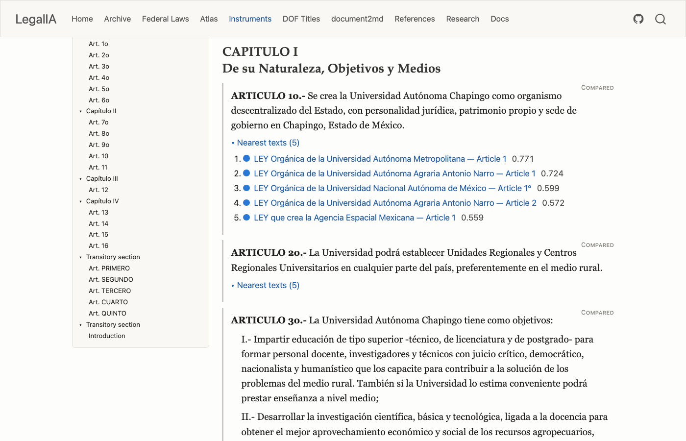
La página Instruments
Cada instrumento tiene su esquema, su texto y, para cada fragmento comparado, los cinco textos más cercanos.
Además trae un enlace para comentar el instrumento, y así quien lo lee puede señalar un cruce que no le convence.
Lo que falta
El límite
El atlas describe cercanía textual y no mide parentesco jurídico. Es una herramienta para explorar, no una medida validada.
Técnicas
Recursos y tareas
Todo es abierto
Paquetes en PyPI, releases con licencia Creative Commons, sitio web y código Apache 2.0 en https://ingeotec.github.io/LegalIA/